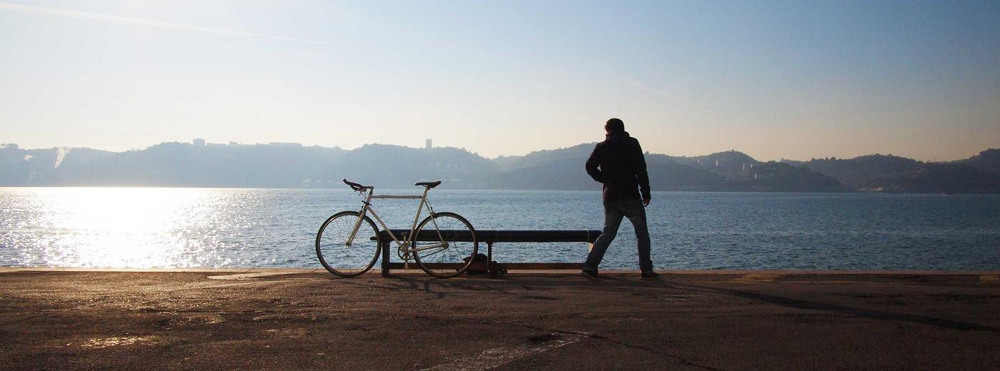
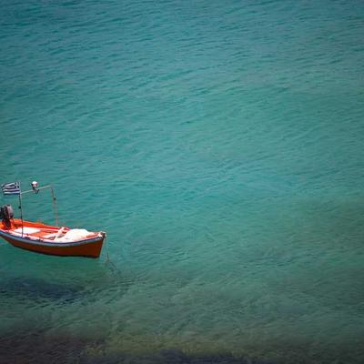

- 1 Slow Tide 3:42
- 2 Harbour Wall 4:05
- 3 Cotton Light 3:18
- 4 Kestrel 3:56
- 5 Low Water 3:02
- 6 Green Room 4:21
- 7 Thirteen Weeks 3:35
- 8 Salt Air 2:58
- 9 Nightjar 4:44
- 10 Pale Blue 3:12
- 11 Slow Tide (Reprise) 2:05
Slow Tide
Vela Moreno
3:42
Harbour Wall
Vela Moreno
4:05
 Saltglass
Vela Moreno
4:13
Cotton Light
Vela Moreno
3:18
Kestrel
Vela Moreno
3:56
Saltglass
Vela Moreno
4:13
Cotton Light
Vela Moreno
3:18
Kestrel
Vela Moreno
3:56


Nothing in this format yet
Vela Moreno has no releases of that type.
Artist
Artist
Artist
Artist

Artist
Vela Moreno records at four in the morning, in a converted net loft on the north side of a harbour town, and the records sound like it.
She plays most of what you hear herself — guitars, a borrowed upright piano, tape delay — and mixes for rooms rather than headphones. Three records in, the project has stayed deliberately small: no touring band, no producers, no guest features.
Slow Tide was written over a winter of night shifts, tracked to a four-track machine and then bounced to digital at the last possible moment. The result is warm, unhurried and slightly out of focus, which is roughly the point.

Harbour Loft, Lower Harbour · 2024